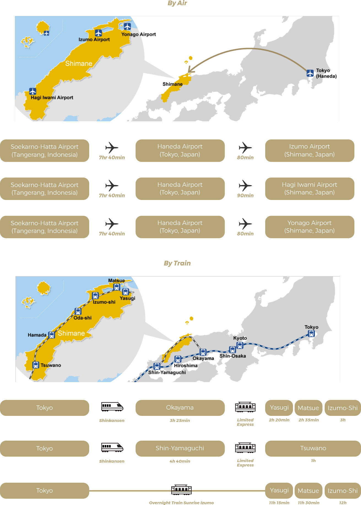
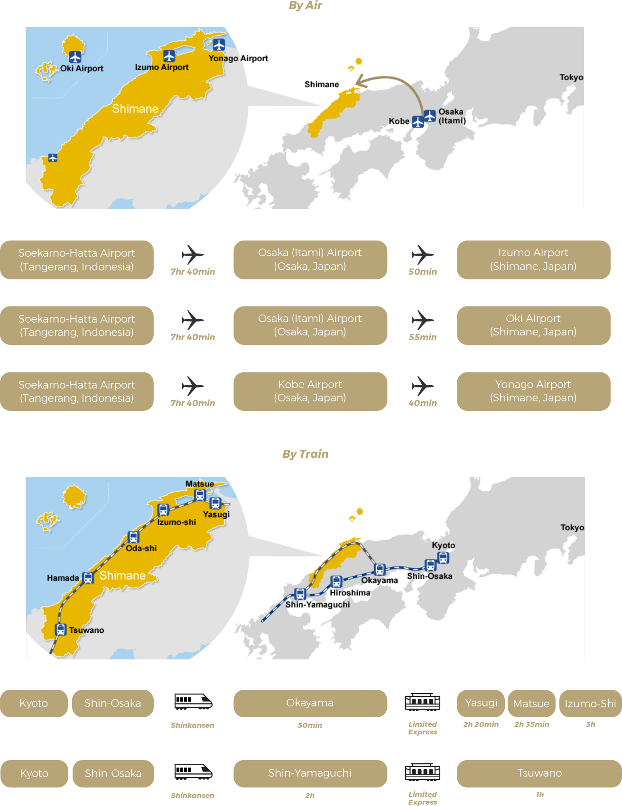

Prefektur Shimane terletak di bagian barat Jepang yang tepat menghadap Laut Jepang. Prefektur ini memiliki sejarah yang panjang; berbagai legenda serta cerita rakyat dapat ditemukan di mana-mana, dan budaya serta tradisi yang terkait dengan legenda tersebut masih hidup dalam kehidupan sehari-hari masyarakat Shimane. Di Prefektur Shimane juga terdapat banyak tempat wisata, yaitu:
Izumo Taisha merupakan kuil tua dalam sejarah Jepang. Shimane adalah tempat yang terkenal di mana para dewa Jepang berkumpul setiap tahunnya, dan lokasi di mana mereka berkumpul adalah Izumo Taisha. Kuil ini terletak di bagian timur Shimane, dan populer sebagai salah satu power spot terkemuka di Jepang.
Reruntuhan Iwami Ginzan adalah tambang perak yang menjadi kebanggaan Jepang, dan telah teregistrasi di situs Warisan Dunia UNESCO (UNESCO's World Heritage Sites). Pada awal abad ke-17, Jepang menghasilkan sekitar sepertiga perak dunia, yang sebagian besar berasal dari tambang ini. Kondisi pada kota tambang masih terjaga dengan baik dan bagus untuk berjalan-jalan dan menikmati atmosfernya yang unik.
Di sisi utara Prefektur Shimane, terdapat Kepulauan Oki yang terdiri dari sekitar 180 pulau dengan pemandangan yang mempesona dan dinamis yang jauh melampaui ekspektasi anda. Oki memiliki sejarah, budaya, dan ekosistem yang unik sehingga menjadi bagian dari Global Geoparks Network sejak September 2013.
Shimane merupakan prefektur yang terkenal memiliki onsen yang sangat banyak. Salah satunya adalah Tamatsukuri Onsen yang disebut sebagai Onsen (Pemandian Air Panas Jepang) tertua di Jepang. Onsen ini memiliki popularitas sebagai "air onsen untuk kecantikan kulit" dari sejak lama.
Pemandangan alam, tradisi, dan budaya yang luar biasa. Ayo datang dan kunjungi prefektur Shimane yang penuh dengan pesona!
Ada lebih dari 60 mata air panas di prefektur Shimane, termasuk "air onsen untuk kecantikan kulit", yang merupakan salah satu dari 3 sumber air panas terbaik di Jepang. Anda juga bisa memilih onsen sesuai dengan kondisi kulit anda. Kuliner di prefektur Shimane juga memiliki banyak bahan yang baik untuk menutrisi kulit anda.
Prefektur Shimane adalah salah satu area dengan tingkat kelembapan tertinggi di Jepang. Shimane adalah lingkungan yang ramah untuk kulit, di mana regenerasi sel terjadi dengan baik dengan kulit yang terjaga tetap lembab dan tidak mudah kering.
Selain efek kekeringan, sinar ultraviolet dianggap berbahaya bagi kulit. Prefektur Shimane, yang memiliki waktu siang hari yang pendek, membuatnya kurang rentan terhadap efek sinar tersebut. Selain kelembapan yang pas dan siang hari yang pendek, Shimane adalah lingkungan yang ramah kulit karena tidak terlalu terpengaruh oleh perubahan tekanan atmosfer, angin, dan polusi udara yang menyebabkan masalah kulit.
Merupakan produk kecantikan paling populer dari HIME Cosmetics, yang diproduksi oleh Tamatsukuri Onsen.
Sabun muka ini menghasilkan busa halus seperti whipped cream, dan dapat membersihkan wajah anda secara maksimal.
Lotion pelembab yang mengandung 80% air onsen dari Tamatsukuri Onsen dan asam hialuronat (hyaluronic acid). Bahan-bahan ini perlahan-lahan meresap ke dalam kulit, membuat kulit menjadi lembap dan halus.
Dapatkan kulit lembut seperti setelah berendam di onsen! Lotion ini adalah lotion tubuh dengan kandungan air onsen yang dapat mencegah kulit menjadi kering karena dehidrasi. Kandungan air onsen (bahan pelembap) membuat kulit menjadi lembut dan terhidrasi.
Mengandung air onsen untuk melindungi tangan yang kasar dari kekeringan dan membuat kulit menjadi lembut dan lembap.
Cepat meresap ke dalam kulit (stratum corneum), tidak lengket, dan terasa halus.
Dengan menggunakan mawar spesial "Sahime" yang hanya ditanam di kebun rahasia di Okuizumo, lembapkan rambut kering hanya dengan beberapa semprotan dengan aroma mawar yang segar.
Mengandung lima jenis bahan ceramide (bahan pelembap) yang dapat melindungi kilau rambut anda.
Hand cream yang mengandung asam hialuronat (hyaluronic acid) dan kolagen untuk menjaga kelembapan kulit anda.
Beraroma mawar yang berasal dari mawar spesial 'Sahime'. Ukurannya yang kecil cocok untuk dibawa ke mana saja.
Produk lip balm ini mengandung beeswax dan jojoba oil untuk menjaga kelembapan bibir anda. Lip balm ini memiliki aroma mawar yang berasal dari mawar spesial 'Sahime'.
Karena jenis lip balm ini tidak berwarna, dapat juga digunakan sebagai lip base.
Sabun dibuat secara handmade di mana komposisinya mengandung bahan alami, tanpa bahan pengawet dan pewarna kimia, yang berguna bagi kesehatan kulit serta memiliki efek pelembab yang tinggi. Apabila sabun digunakan bersama dengan handuk mandi 'Kibiso Hada Tomodachi' , kulit anda akan menjadi lebih sehat, halus dan lembab.
Yuk berpartisipasi untuk mengisi angket terkait dengan produk yang kami tawarkan di sini!
Isi Angket Di SiniBagi yang berminat untuk mengunjungi Shimane, silahkan klik link dibawah ini!
Tur Ke ShimaneProvided by:
| From Tokyo | From Osaka |
|---|---|
|   | |